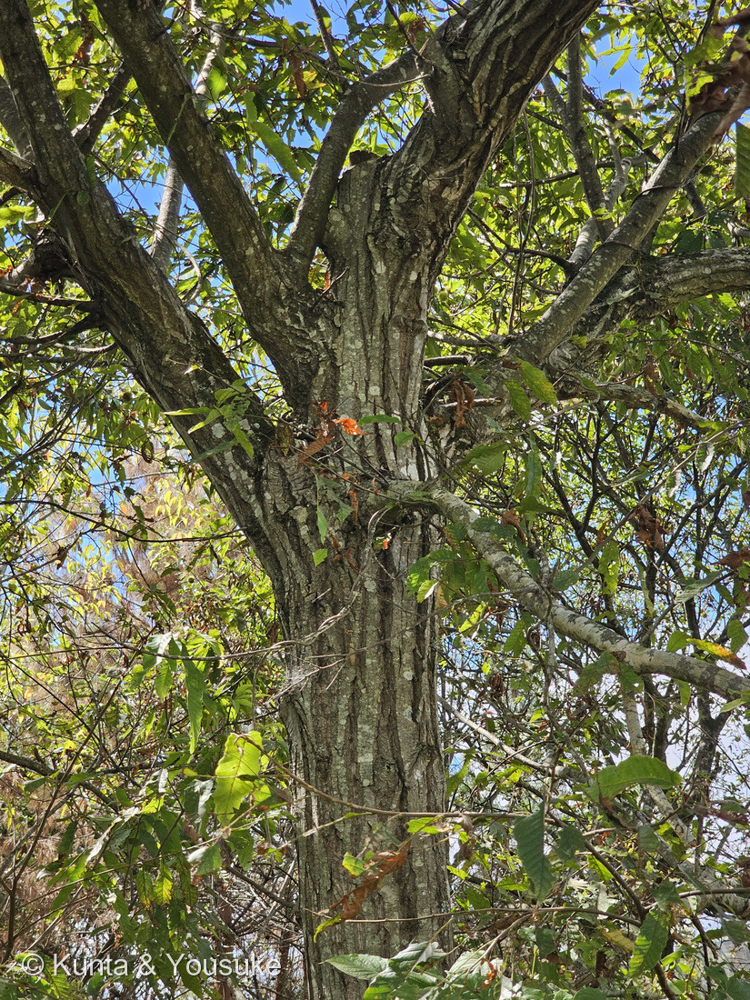
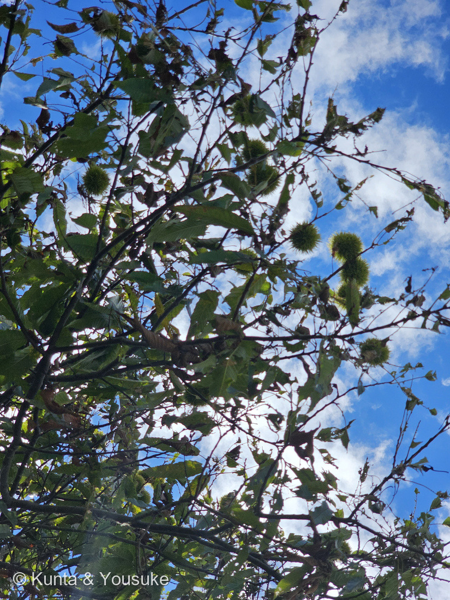
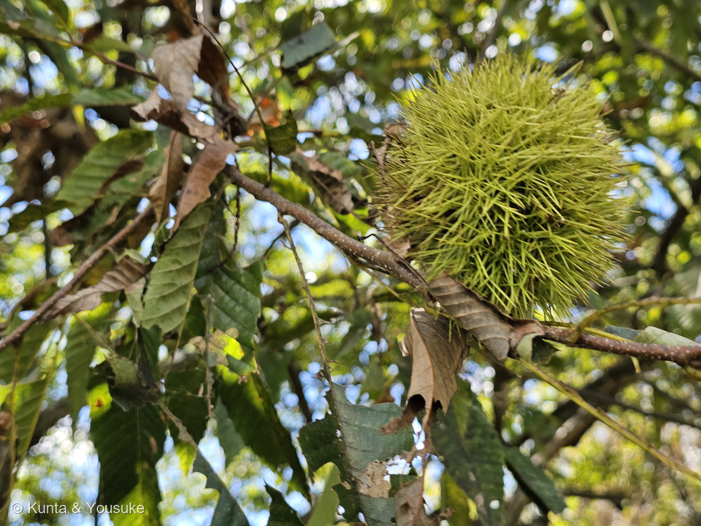
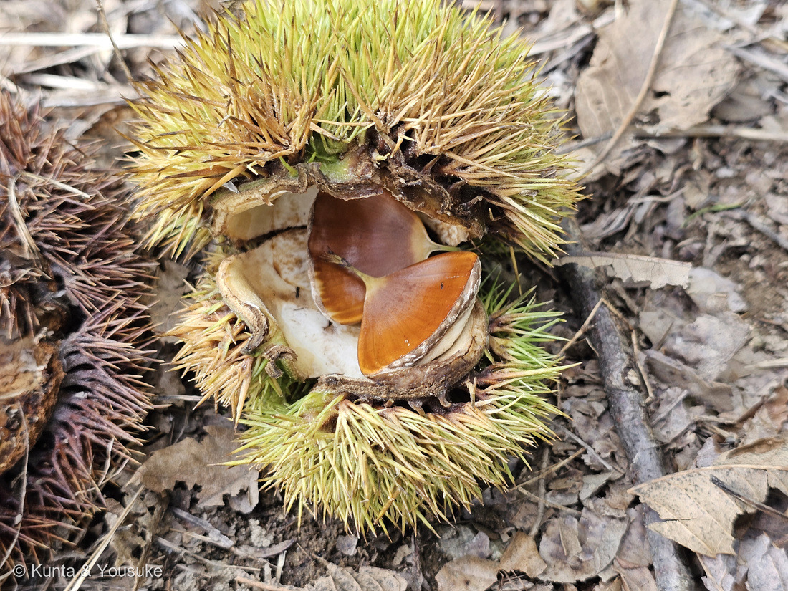
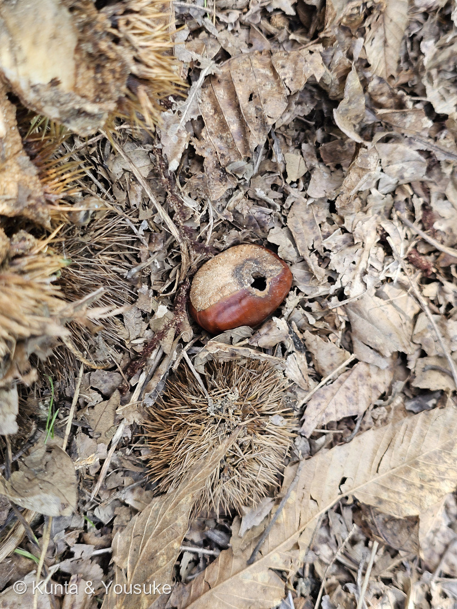
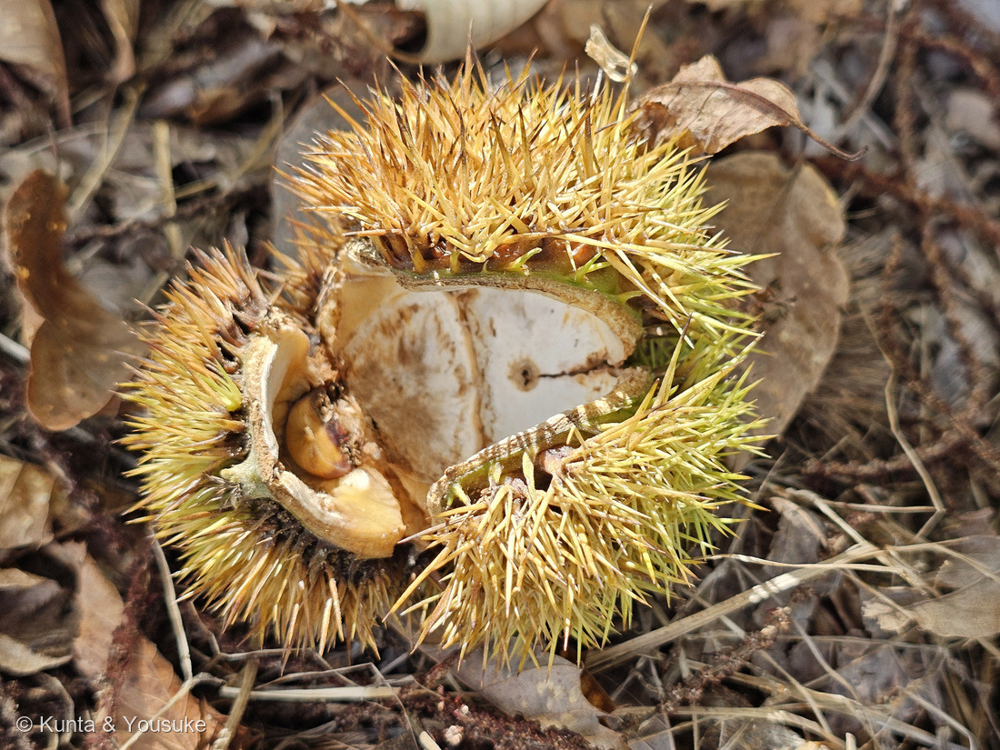
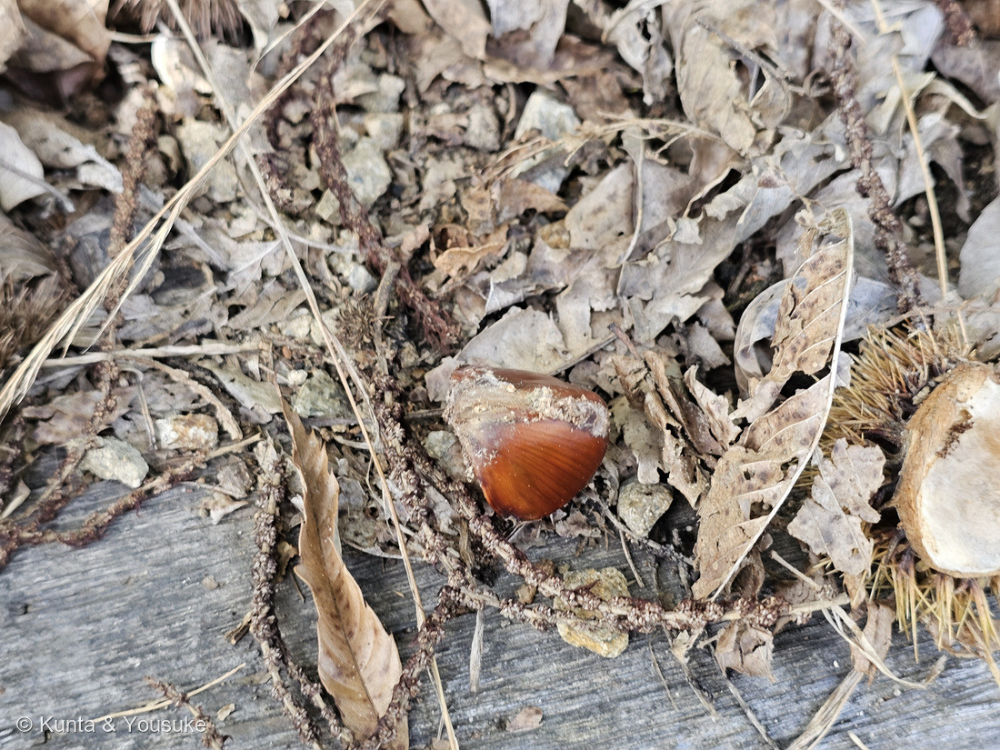

地図を読み込んでいるよ…
🔍 写真も地図も、押しているあいだ拡大して見られるよ（スマホは指を置いてすこし待ってね）。
🌍 の地図＝この子がもともと自生している場所を緑に。日本（北海道西南部・本州・四国・九州）と朝鮮半島南部の在来種。丘陵地〜山地に自生し、縄文時代から栽培されてきた。⚠花の駅のこの木が、植えられた栽培品種か野生のシバグリかは分からない。くわしくは下の地図の説明を見てね。
⭐日本と朝鮮半島の子だよ＝三河の植物観察は「在来種 北海道、本州、四国、九州、朝鮮」、Wikipediaは「日本と朝鮮半島南部原産。北海道西南部から本州、四国、九州の屋久島まで、および朝鮮半島に分布する」とする。⚠北海道は「西南部」だけなのに、道ぜんぶが緑になっている（Wikipedia「北海道では、石狩低地帯付近まであるが、それより北東部は激減する」）。⚠朝鮮半島は「南部」だけなのに、韓国も北朝鮮も国ごとしか塗れないので、地図は広めだよ。⭐縄文時代から栽培されてきた木なので、野生の分布と人が植えた分布が重なっていて、どこまでが「もともと」かは分かりにくい（Wikipedia「クリは栽培の歴史が古く野生化しているものもあるために分かりにくい」）。⚠世羅の花の駅のこの木も、植えられたものだと思う。
⚠ 地図は国（日本と中国だけ県・省）までしか塗れないから、ほんとうの分布より広く見えていることがあるよ。地図はだいたいの場所。正確なところは、上の文を見てね。
クリ（栗）
Castanea crenata Siebold & Zucc.
別名 · シバグリ・ヤマグリ（野生のもの）／ニホングリ・和栗／英名 Japanese chestnut ⭐crenata＝ぎざぎざの（葉の鋸歯）
ブナ科 · Fagaceae（クリ属 Castanea · ブナ目 Fagales）── ⭐図鑑で5人目のブナ科（227・241 クヌギ・252・267 シラカシ）／⭐⭐クリ属ははじめて＝殻斗がお椀ではなく「いが」になるドングリ
燻太さんの言葉「美味しく熟していそうなクリは、残念ながら野生動物に食べられちゃってか見当たらなかったよ。足元には、虫さんが食べたあとと、カビの栄養になりつつある種子、そして粃のような薄い種子ならあった。……いつの間にか靴底に毬栗がささっちゃってた。野生の熊さんとかも、刺さらないように気を付けているのかな？」── ⭐クマは木に登って枝ごと食べる（クマ棚）。いがの剥きかたは出典が見つからず、宿題に
⭐⭐⭐⭐⭐ 名前と学名の由来 ── 「栗」と、ギザギザ
- ⭐⭐ 和名「クリ」＝日本でいちばん古い食べものの名前のひとつ＝⭐縄文時代初期から食べられ、長野県のお宮の森裏遺跡からは1万2900〜1万2700年前のクリが出ている（Wikipedia）。⭐三内丸山遺跡のクリのDNAから、縄文時代にはもう栽培されていたことが分かっている（同）。⚠「クリ」の語源そのものは、読めた出典に無かったよ。
- ⭐ 野生のものはシバグリ（柴栗）・ヤマグリ（山栗）（三河・Wikipedia）＝実が小さい。栽培の大きいものはタンバグリ（丹波栗）（三河）。
- ⭐⭐ 属名 Castanea＝ラテン語で「クリ」＝ギリシャ語 kastanea から（⚠語源は辞書どおり・一次資料は未読）。⭐英語の chestnut も、フランス語の châtaigne も、この語から。
- ⭐⭐⭐ 種小名 crenata＝ラテン語 crenatus「円い鋸歯のある・ぎざぎざの」＝⭐葉のふちの鋸歯（写真②③）。⭐1846年、シーボルトとツッカリーニの命名（Wikipedia「(1846)」）＝⭐長崎に来たシーボルトが、日本の木として名づけた子＝332 ハマナス・333 サギソウのツンベルクより60年あと。
- ⭐ 英名 Japanese chestnut・中国名 日本栗（三河）＝⭐世界のクリの中で「日本の」と名前に入っている種。
⭐⭐⭐⭐⭐ 燻太さんの「野生動物に食べられちゃって」── クマは、いがが刺さらないの？
- ⭐ 燻太さんの言葉＝「美味しく熟していそうなクリは、残念ながら野生動物に食べられちゃってか見当たらなかったよ。」「観察の途中、いつの間にか靴底に毬栗がささっちゃってた。野生の熊さんとかも、刺さらないように気を付けているのかな？」
- ⭐⭐⭐ クリは、クマの秋の主食のひとつ＝Wikipedia ツキノワグマ「盛夏から秋にかけてはドングリが主食となる」・「日本におけるクマの被害で特に多い農作物はリンゴ、クリ、カキなどの果樹」＝⭐人が拾う前に、クマ・イノシシ・ネズミ・カケスたちが先に来る（⚠この木でだれが食べたかは分からない＝写真には食べあとしか無い）。
- ⭐⭐⭐⭐⭐ クマは、地面で拾うより木に登って食べる＝Wikipedia「木登りは得意でしばしば樹上に居座り、枝を折って枝先の果実などを食べている。この時折られた枝を積み重ねたものをしばしば残し、これを『クマ棚』と呼ぶ」＝⭐⭐いがが落ちて地面に散らばる前に、枝ごと折って食べる＝⭐「クマ棚が形成される木は結実量が多い」「山全体が凶作の年はクマ棚の数が増える」（同）＝クマは実のなり具合を見て木を選んでいる。
- ⚠⚠ 正直に＝「いがが刺さらないように気を付けているか」を書いた出典は、ぼくには見つけられなかった。⭐分かっているのは、①クマは木の上で枝ごと食べる ②ツキノワグマの唾液にはドングリのタンニンを中和する成分がある（Wikipedia）＝渋い実を大量に食べる体になっている、の2つ。⏳いがをどう剥くかは、クマ棚の下の食べかすを見た人の記録を探す宿題にするね。
- ⭐⭐ そして、燻太さんの靴底＝⭐いがの針は「靴底を貫く」ほど＝三河「苞は刺状」・Wikipedia「総苞は…棘状になり中の堅果を守る」＝⭐⭐あの針は、まさに食べられないための武器＝⭐ただし熟すと自分から4つに割れて、実を差し出す（写真④⑥）＝「守ってから、渡す」順番になっている。
⭐⭐⭐⭐ 足もとの実たち ── 虫の穴・カビ・粃（しいな）


番号は上のギャラリーからのつづき。⑤の虫の穴の実は上のギャラリーに。🔍 押しているあいだ拡大して見られるよ。
- ⭐ 燻太さんの言葉＝「足元には、虫さんが食べたあとと、カビの栄養になりつつある種子、そして粃のような薄い種子ならあった。」
- ⭐⭐⭐ 写真⑤＝虫の穴＝実にまるい穴がひとつ＝⭐⭐これはクリシギゾウムシの幼虫が出ていったあとの穴、だと思う＝Wikipedia「幼虫は種子内部を食べて成長する…10月下旬〜12月上旬に幼虫は老熟し、種子の皮に直径3mm程度の穴を開けて脱出し、土に潜り込んで蛹室を作り」＝⭐母親のゾウムシは、8〜10月にいがの針のすきまから長い口吻を差しこんで、実の渋皮まで穴を開けて卵を産む（同「鞠果の表面を覆う棘の隙間から口吻を突き刺し」）＝⭐⭐いがの針も、口吻の長さには負ける。⚠「クリにつくのは本種だけ」（同）だけど、クリミガなど別の虫の穴の可能性も残るので「だと思う」。⭐9月20日に穴があるのは、Wikipediaの「10月下旬〜」より早い＝暖かい年か、早生の木か。
- ⭐⭐ 写真⑦＝カビ＝座（つけ根）のまわりが白く粉をふいている＝⭐落ちた実は、地面の菌にすぐ分解されはじめる＝⚠カビの種類は分からない。⭐Wikipedia「クリの実を長期間おいておくと、水分が抜けて実が縮んで虫も入ってしまう」＝森の床では、それが数日で起きる。
- ⭐⭐⭐ 写真④⑥＝粃（しいな）＝⑥の白い壁にくっついた薄い実、④の片側が平らな実＝⭐⭐1つのいがには雌花が3つ咲き、実も最大3つ。両わきの実は真ん中の実に押されて片側が平らになり、受粉や成長に失敗すると2つ以下になる（Wikipedia「1つの総苞には通常雌花が3本咲く」「1つの総苞には最大3つの堅果が入っているが、受粉受精段階やその後の成長で失敗すると2つ以下のこともしばしばある」）。⭐⭐⭐そして、クリは自家不和合性＝農研機構「クリは自家不和合性を示すことから、結実のために他品種による受粉が必要であり、栽培上受粉樹の混植が必要である」「受粉樹からの植栽距離が近いほど…収量が多くなる」＝⭐⭐もしこの木が1本きりなら、粃が多いのは相手の花粉が足りないせいかもしれない＝⏳宿題③＝近くに別のクリがあるか。
- ⭐ 燻太さんの言葉＝「もっと時間をかけて観察すれば、綺麗な種子がみれたかも。でも、お店でもクリは売っているから、焦る必要はないよね。」＝⭐⭐そのとおり。Wikipedia「クリの実は、一般の果樹が樹上に成る実をもいで採取するのとは異なり、落ちた実をいがに気をつけながら拾う」＝拾うのは、落ちてから虫と動物と菌の手が伸びる前の、短い時間。⭐そこに間に合わなくても、写真④⑤⑥⑦が「森の台所」の記録になった。
⭐⭐⭐ この植物のこと ── 縄文の木、いがのドングリ
- ブナ科クリ属の落葉高木、高さ10〜17m（三河）／最大30m・胸高直径2m（Wikipedia）。幹は灰黒色で縦に長い割れ目（三河）＝写真①。⭐Wikipedia「コナラ属の種ほどは深く裂けないことが多く特徴的」。
- ⭐⭐ いがは「殻斗（かくと）」＝ドングリのお椀と同じもの＝⭐Wikipedia「いわゆるドングリの仲間であるが、総苞はお椀型ではなく棘状になり中の堅果を守る」＝⭐⭐241 クヌギのお椀（うろこがくるくる巻く）と、クリの針の玉は、同じ部品の別の形。
- ⭐⭐ 花は5〜6月＝雄花の穂は10〜20cmで直立し、雌花は同じ穂のつけ根に3つずつ（Wikipedia・三河「細く立ち上がっているのが雌花で、ふさふさしているのが雄花」）。⭐雄花が先に咲き、雌花、また雄花の順（雄性先熟のヘテロダイコガミー）（Wikipedia）＝⭐自分の花粉が自分の雌花に当たりにくいしくみ。⭐虫媒花で、花粉は虫がいないと25m以内にほとんど落ちる（同）。
- ⭐⭐ 葉はクヌギそっくり＝Wikipedia「全体的にクヌギ類に似る…鋸歯の部分まで緑色である」／三河「鋸歯の先が刺状になる。刺は針状でなく、基部が幅広く、緑色である」「クヌギやアベマキは…鋸歯の先端の刺が針状」＝⭐⭐見分けは「鋸歯の先の刺に緑があるか」。⭐葉の裏に小さな腺点が多数、主脈に星状毛（三河）。
- ⭐⭐⭐ 縄文の木＝Wikipedia「縄文時代には食料であるほか、建築材、木具材として極めて重要な樹木」「三内丸山遺跡の6本柱の巨大構造物の主柱にも利用されていた」＝⭐材は堅くて腐りにくく、線路の枕木や家の土台に（同）。
- ⭐ 害虫の歴史＝戦前に中国から入ったクリタマバチで、100種を超えた品種の大半が消えた→天敵チュウゴクオナガコバチの放飼で被害が激減（1982年〜）→次の問題がクリシギゾウムシ（Wikipedia）＝⭐写真⑤の穴は、その「次の問題」。
- ⭐ 産地＝茨城・熊本・愛媛・岐阜・埼玉の順（2014年・Wikipedia）。⭐「桃栗三年、柿八年」（同）。
⚠ 同定について ── いががあれば迷わない・でも品種と野生は分からない
- ⭐⭐⭐⭐⭐ いが（針だらけの殻斗）が4つに割れて堅果が出る＝日本ではクリ属だけ（三河・Wikipedia）＝写真③④⑥。
- ⭐⭐ 葉・幹・皮目もクリに合う（上の同定欄）。⭐落とした相手＝クヌギ・アベマキ（鋸歯の刺が針状・殻斗はお椀）／チュウゴクグリ（小枝と葉裏に毛が多い＝写真では確かめられず、日本の植栽はほぼニホングリ）。
- ⚠ 栽培品種か野生のシバグリかは分からない＝⭐実の大きさを1円玉で測れば手がかりになる（宿題①）。⚠花の駅に植えられた木なら、栽培品種の可能性が高いと思う（ぼくの読み）。
⏳ 宿題 ── 7つ
- ⏳⭐⭐⭐⭐⭐ ①きれいな実を拾って、1円玉と＝大粒（栽培品種）か小粒（シバグリ）か。
- ⏳⭐⭐⭐⭐ ②1つのいがに実が何個＝3個が定員・両わきは片側が平ら。
- ⏳⭐⭐⭐ ③近くに別のクリの木があるか＝自家不和合性＝粃の理由かも。
- ⏳⭐⭐⭐ ④5〜6月の花＝直立する雄花の穂・匂い・つけ根の雌花3つ。
- ⏳⭐⭐ ⑤鋸歯の先の刺を等倍で＝緑で幅広（クリ）か、針（クヌギ）か＝241と見くらべ。
- ⏳⭐⭐ ⑥クマ棚＝山のクリの木で、折られた枝の積み重ね。⚠安全な場所から。
- ⏳⭐ ⑦おまけのコナラ＝いがとお椀を並べる。
- ⚠⚠ いがは靴底を貫く＝厚い靴で。
参考：三河の植物観察「クリ」（Castanea crenata Sieb. et Zucc.／別名シバグリ／中国名 日本栗／英名 Japanese chestnut／花期5〜6月／高さ10〜17m／丘陵地、山地／在来種 北海道、本州、四国、九州、朝鮮／幹は灰黒色、縦に長い割れ目／葉は互生し、長さ7〜14cm、幅3〜4cmの長楕円形…葉縁には鋸歯があり、鋸歯の先が刺状になる。刺は針状でなく、基部が幅広く、緑色である／クヌギやアベマキは葉の形がよく似ているが鋸歯の先端の刺が針状／クリ属＝殻斗果は2〜4個のバルブに分割される。苞は刺状。堅果は殻斗ごとに1〜3個入る／チュウゴクグリ＝小枝は短毛が多く…葉の下面の脈に綿毛）／三河の植物観察「コナラ」（里山を代表する落葉樹の一つ／葉は倒卵形で鋭くとがった鋸歯／堅果は長さ1.7〜2cmの長楕円形。殻斗は浅い杯状／果期 翌年10〜11月）／Wikipedia「クリ」（Castanea crenata Siebold et Zucc. (1846)／野生のものはシバグリ・ヤマグリ／樹皮は…縦に裂ける。コナラ属の種ほどは深く裂けないことが多く特徴的／葉は…全体的にクヌギ類に似る…鋸歯の部分まで緑色／雄花は下垂せずに直立し長さは10〜20cm…雌花は…基部側に付く…1つの総苞には通常雌花が3本咲く。花には特有の臭気があり／総苞はお椀型ではなく棘状になり中の堅果を守る…1つの総苞には最大3つの堅果が入っているが、受粉受精段階やその後の成長で失敗すると2つ以下のこともしばしばある／一年生枝、小枝共に皮目が良く目立つ／ヘテロダイコガミー…雄性先熟／虫媒されない場合、花粉は25m以内にほとんどが落下／縄文時代初期から食用…1万2900年前〜1万2700年前のクリ／三内丸山遺跡…栽培／クリタマバチ…チュウゴクオナガコバチ／クリシギゾウムシによる果実被害／落ちた実をいがに気をつけながら拾う／クリの実を長期間おいておくと、水分が抜けて実が縮んで虫も入ってしまう／桃栗三年、柿八年）／Wikipedia「クリシギゾウムシ」（Curculio sikkimensis／成虫の出現は8月上旬〜10月下旬／雌はクリの鞠果の表面を覆う棘の隙間から口吻を突き刺し、内部の種子の渋皮にまで達する穴を開ける…種子1個あたり普通は2〜8個の卵／10月下旬〜12月上旬に幼虫は老熟し、種子の皮に直径3mm程度の穴を開けて脱出し、土に潜り込んで蛹室を作り／クリにつくのは本種だけ／日本の栽培栗においては、最も重要な害虫の一つ）／Wikipedia「ツキノワグマ」（盛夏から秋にかけてはドングリが主食となる。ドングリにはタンニンが大量に含まれ多食は有害であるが、ツキノワグマの唾液にはタンニンを中和する成分が含まれているという／木登りは得意でしばしば樹上に居座り、枝を折って枝先の果実などを食べている。この時折られた枝を積み重ねたものをしばしば残し、これを「クマ棚」と呼ぶ。クマ棚を作った数と樹木の結実状況を観察したところ、クマ棚が形成される木は結実量が多いこと、山全体が凶作の年はクマ棚の数が増える／日本におけるクマの被害で特に多い農作物はリンゴ、クリ、カキなどの果樹）／農研機構「クリ「ぽろたん」の安定生産に効果的な受粉樹の植栽方法」（2019）（クリは自家不和合性を示すことから、結実のために他品種による受粉が必要であり、栽培上受粉樹の混植が必要である／受粉樹からの植栽距離が近いほど、受粉樹の花粉で結実する果実の割合が上がり、収量が多くなる）。⚠「クマがいがをどう剥くか」を書いた出典は見つけられなかった。